기술보다 경험이 이기는 이유
발표자가 먼저 꺼내는 건 시장 크기예요. 아래 슬라이드의 세 숫자가 그 근거예요. 왼쪽부터 AI 에이전트 시장의 연평균 성장률 40% 이상, 요즘 잘나간다는 뷰티 시장의 6~7%, 그리고 5년 뒤 예상 시장 규모 6배예요.
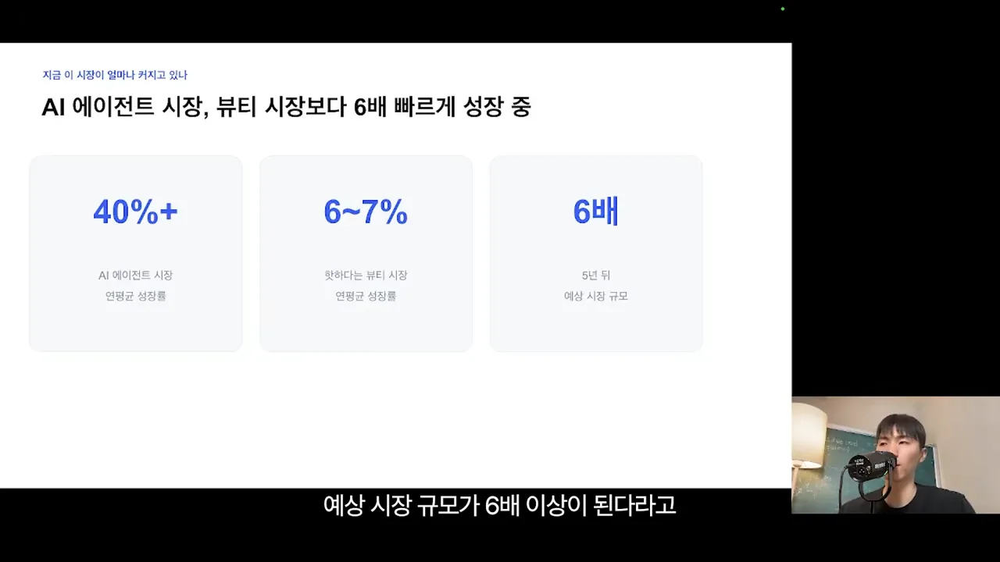
기술을 팔던 시대에서 경험을 파는 시대로
발표자가 말하는 변화는 누가 무엇을 파느냐예요. 왼쪽 '과거' 카드에서는 기술력을 가진 사회 초년생이 매출 100억 원 대표에게 에이전트 시스템을 팔았어요. 코드를 다루거나 자동화 도구로 워크플로를 짜 주는 능력이 곧 기술력이었죠. 오른쪽 '지금' 카드에서는 기술이 싸진 대신, 경험과 암묵지를 가진 대표가 직접 만들어 팔아요.
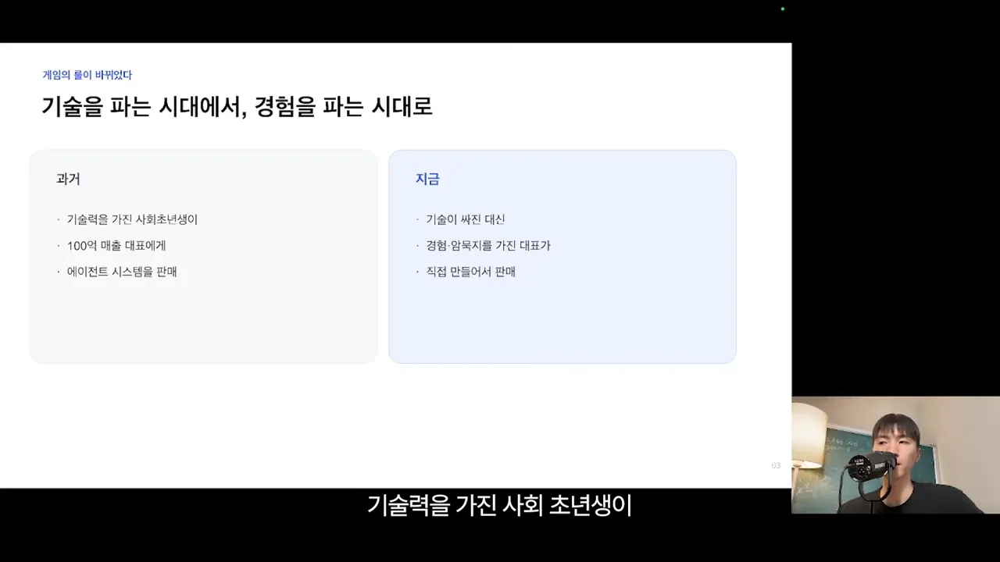
발표자 자신도 같은 길을 걸었다고 해요. 학원을 운영하며 좋은 결과를 낸 방식과 마케팅 노하우를 에이전트로 만들어 직접 팔고 있어요.
그런데 왜 아직 아무도 못 하고 있을까요
'한 사람이 에이전트 수백 개로 사업한다'는 말은 많지만, 실제로 그런 경우는 드물어요. 슬라이드는 이유를 두 줄로 정리해요. 빨간 글씨가 첫 번째 이유예요.
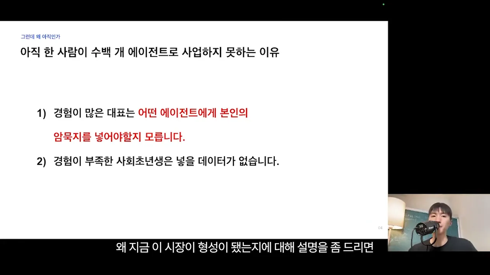
- 경험 많은 대표 — 어떤 에이전트에 자기 암묵지를 넣어야 할지 몰라요. 머릿속 노하우를 꺼내 글로 정리하는 일 자체가 아주 어려워요.
- 경험이 부족한 사회 초년생 — 넣을 데이터가 없어요.
그래서 발표자는 기술과 경험이 겨루면 경험이 이긴다고 봐요.
즉 경험의 격차가 곧 경쟁력이 되는 시대가 열렸고요.
— 영상 02:45
경험 있는 대표가 시스템을 하나 만들면 다른 회사에 그대로 복제해 붙일 수 있어요. 사람처럼 인수인계에 시간을 쓰지 않으니 빠르게 넓혀 간다고 해요.
첫걸음은 클로드 코드로 하나 만들어 보기
발표자는 부트캠프에서 만난 사례 하나로 시작해요. 슬라이드 왼쪽 영상 속 휴대전화 화면이, 매출 100억 원 규모 커머스 회사 대표가 직접 만든 회사용 OS 앱이에요. 오른쪽에는 '직접 모바일에서도 사용', 'OS를 구축해 진행', '업무 자동화 진행'이라고 적혀 있어요.
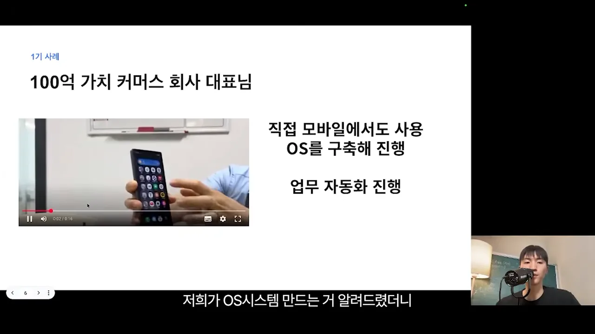
전체 순서부터 보고 갈게요
영상의 나머지는 이런 시스템을 만들어 파는 순서예요. 슬라이드 여러 장에 흩어져 있는 단계를 한 줄로 모으면 아래와 같아요.
flowchart LR A["① 클로드 코드로
간단한 앱 만들기"] --> B["② 회사를 팀·조직·
워크플로로 쪼개기"] --> C["③ 암묵지를 꺼내는
네 단계"] --> D["④ 에이전트를
OS로 묶기"] --> E["⑤ 팔기"]
첫 단계는 하나라도 직접 만들어 보기
먼저 클로드 코드 기초를 익히고 간단한 프로그램을 하나 만들어 봐야 해요. 발표자는 캘린더 앱 정도면 충분하다고 해요. 이걸 해 보지 않고 '내 노하우로 뭔가 만들겠다'는 건 말이 안 된다고 잘라 말해요. 기초 영상은 유튜브에 아주 많아요.
한 번이라도 직접 만들어 보면 두 가지를 알게 된다고 해요. 요즘 AI가 어느 수준까지 만들어 내는지, 그리고 왜 업종 데이터가 그렇게 중요한지예요.
회사를 팀·조직·워크플로로 쪼개기
두 번째 단계는 내 회사를 구조화하고 에이전트를 설계하는 일이에요. 우리 회사에 먼저 AI를 들이고, 그렇게 만든 에이전트를 다른 회사 대표에게 파는 흐름이에요. 슬라이드는 커머스 회사를 예로 네 줄을 채워 놨어요. 맨 아래 4번 줄만 빨간 글씨인 게 눈에 띄어요.
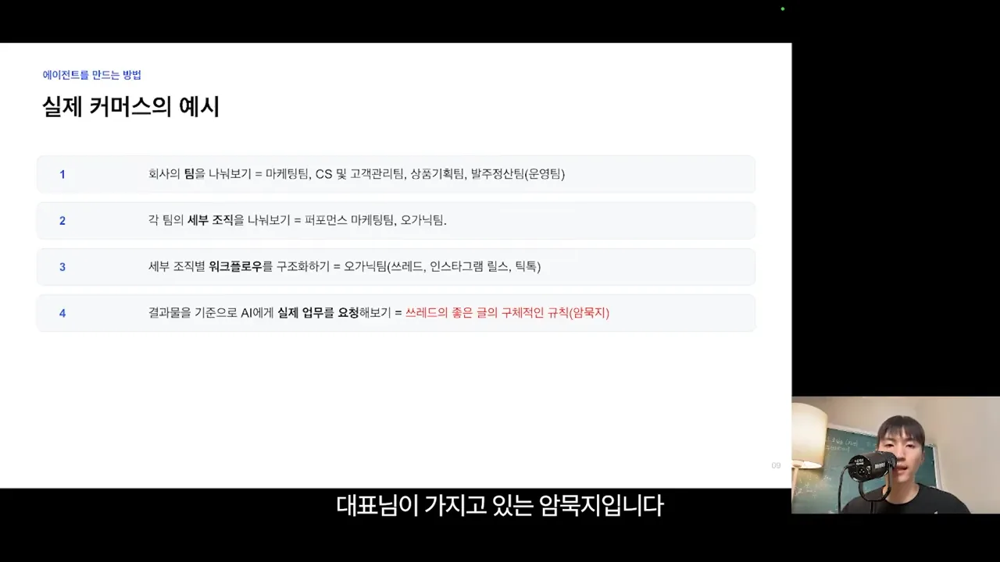
- 팀 나누기 — 마케팅팀, CS(Customer Service)·고객관리팀, 상품기획팀, 발주·정산(운영)팀.
- 세부 조직 나누기 — 마케팅팀이라면 퍼포먼스 마케팅팀과 오가닉팀.
- 워크플로 정리하기 — 오가닉팀이라면 쓰레드, 인스타그램 릴스, 틱톡처럼 플랫폼마다 결과물을 내는 일. 지금은 직원이 하나씩 손으로 하는 경우가 많아요.
- 결과물 기준으로 AI에게 일 맡기기 — 쓰레드에 어떤 글을 써야 매출이 나오는지, 그 규칙을 AI에게 줘요.
한 갈래만 따라 내려가 보면 구조가 더 잘 보여요. 마케팅팀에서 오가닉팀으로, 다시 쓰레드 글쓰기로 좁혀 가면 마지막에 대표만 아는 칸이 남아요.
발표자는 구조화를 하다 보면 칸마다 대표가 가진 암묵지가 꽤 많다는 걸 알게 될 거라고 해요. 그래서 '쓰레드 글쓰기' 같은 칸마다 어떻게 써야 하는지 구체적인 매뉴얼을 많이 만들어 두라고 권해요.
암묵지를 꺼내는 네 단계
'그럼 에이전트는 어떻게 만드느냐'에 대한 답이에요. 발표자는 이걸 거꾸로 거슬러 올라가는 방법, 곧 역산이라고 불러요. 이미 잘된 결과물에서 출발하기 때문이에요. 슬라이드 왼쪽 파란 글씨가 단계 이름, 오른쪽이 할 일이에요.
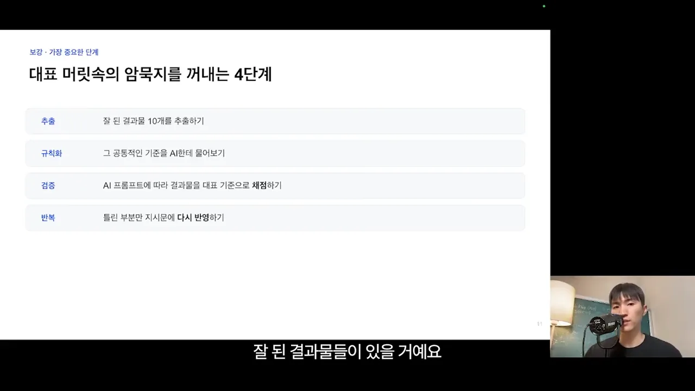
- 추출 — 지금까지 잘된 결과물 10개쯤을 싹 모아요. 쓰레드라면 바이럴이 잘되고 매출 전환이 좋았던 글이에요. 발표자는 이걸 스크래핑해 두라고 해요.
- 규칙화 — 모은 결과물을 AI에게 주고 공통 기준을 물어요. 첫 문단에 뭐가 들어가고 이미지는 어떤 걸 쓰는지 매뉴얼이 이미 있다면 좋지만, 애매하다면 이 방법이 특히 도움이 돼요.
- 검증 — AI가 만든 프롬프트로 결과물을 다시 만들게 하고, 대표의 기준으로 채점해요. 발표자는 이 프롬프트를 MD(Markdown) 파일, 또는 SOP(Standard Operating Procedure) 문서라고도 불러요.
- 반복 — 틀린 부분만 지시문에 다시 반영해요.
슬라이드는 네 줄을 위아래로 늘어놓았지만, 실제로는 3번과 4번이 계속 도는 구조예요.
발표자가 직접 쓰는 질문은 이런 식이에요. 원래 말을 짧게 옮기면 아래와 같아요. 영상 끝에 프롬프트로 남기겠다고 했지만, 영상 안에서 전문을 보여 주지는 않아요.
이 글이 잘 터진 공통적인 기준을 나한테 알려 줘라고 규칙화해 줘라고 이야기를 하시면 굉장히 도움이 됩니다.
— 영상 07:38
예시: 유튜브 대본 채점표
발표자는 유튜브 대본도 에이전트와 함께 써요. 아래 화면 왼쪽이 실제 체크리스트이고, 오른쪽이 배점이에요. 대본을 인트로·본문·CTA(Call To Action) 세 덩어리로 나누고, 왼쪽 목록에서 각 덩어리에 들어가야 할 요소를 체크박스로 적어 놨어요.
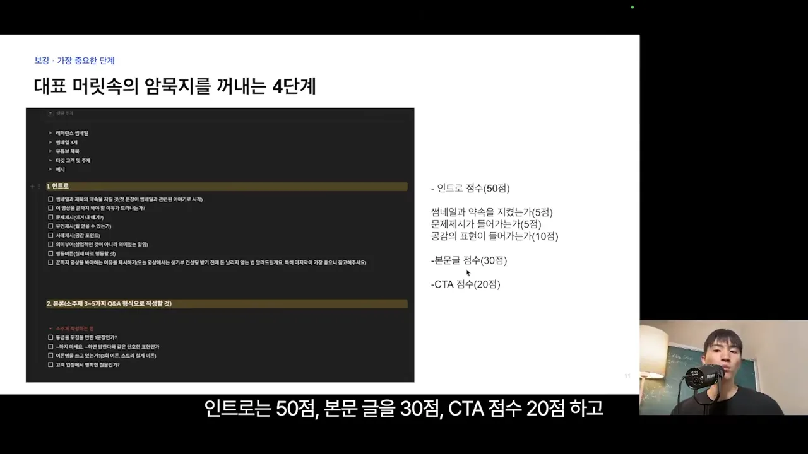
배점 비율만 따로 그리면 이래요. 발표자는 유튜브에서 인트로가 가장 중요하다고 봐서 절반을 인트로에 줬어요. 인트로 50점 안에서도 화면에 배점이 보이는 항목은 세 개예요.
이렇게 점수표를 AI에 넣어 두면, 대본을 만든 뒤 그 기준으로 다시 채점하는 에이전트를 만들 수 있어요. 발표자는 결과가 '이번 대본은 몇 점'처럼 숫자로 나오는 게 가장 좋다고 해요. 점수를 올리는 방향으로 지시문을 계속 다듬을 수 있기 때문이에요.
흩어진 에이전트를 OS로 묶기
여기까지 하면 에이전트가 여러 개 생겨요. 쓰레드 글 생성기, 유튜브 대본, 퍼포먼스 마케팅, 세일즈 프롬프트처럼요. 구성은 업종마다 달라요. 커머스는 커머스대로, 학원은 학원대로, 보험은 보험대로예요. 슬라이드는 이걸 세 줄로 정리하고, '판매 가능한 자산'만 파란색으로 강조해요.
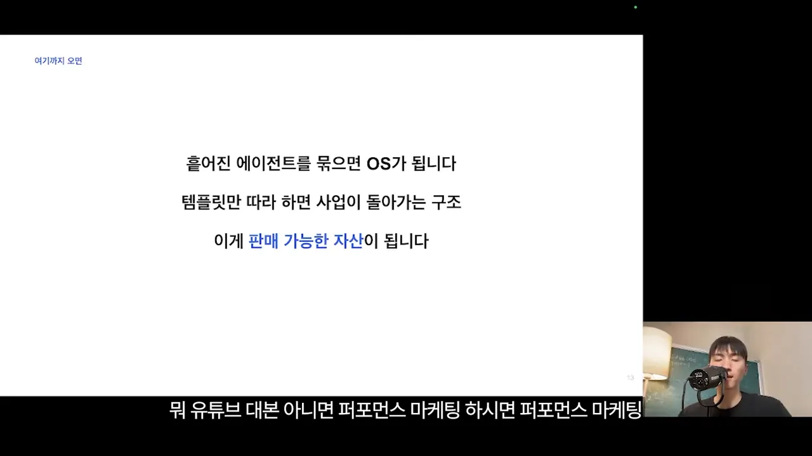
발표자가 말하는 OS는 컴퓨터 운영체제가 아니에요. 한 업종의 일을 처음부터 끝까지 돌리는 에이전트 묶음이에요. 누군가 이 템플릿을 따라 하기만 해도 사업이 돌아가는 구조라서 팔 수 있다는 거예요.
어떻게 팔까요: 순서와 방식
발표자는 파는 일이 사실상 마케팅의 전부라고 해요. 먼저 순서예요. 슬라이드의 세 줄이 그대로 순서예요.
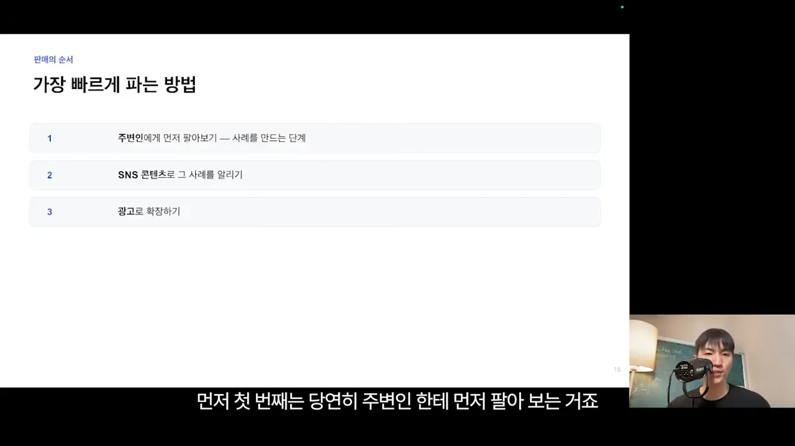
무엇의 형태로 팔까요
다음은 파는 형태예요. 세 카드마다 그 방식에 필요한 준비가 굵은 글씨로 적혀 있어요. 보안 개발자, AI 교육, 법적 데이터 권한이에요.
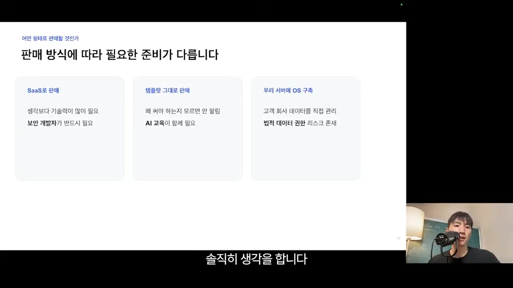
| 방식 | 어떻게 팔아요 | 발표자가 본 걸림돌 |
|---|---|---|
| SaaS | 월 3~4만 원 구독 | 서버에 올리고 사용자가 몰리면 오류와 보안을 계속 챙겨야 해요. 보안 개발자가 반드시 필요하다고 봐요 |
| 템플릿 그대로 | 소스 코드나 템플릿을 한 번에 판매 | 어떻게 쓰는지 몰라서 잘 안 팔려요. 예전 노션 템플릿처럼 팔 수는 있지만 지금은 AI 교육이 함께 필요해요 |
| 우리 서버에 OS 구축 | 고객 회사에 맞춰 적용해 주고 월 구독이나 큰 금액을 한 번에 받기 | 고객 회사 데이터가 들어가는 ERP(Enterprise Resource Planning) 같은 시스템이라 유지보수가 오래 걸리고 귀찮아요. 법적 리스크도 있어요. 대기업이나 큰 계약이 아니면 ROI(Return On Investment)가 안 나올 수 있어요 |
발표자가 권하는 방식
마지막 슬라이드는 돈을 받는 구조로 다시 비교해요. 왼쪽 두 카드는 장점과 단점이 한 줄씩 짝지어 있고, 파랗게 칠한 오른쪽 '템플릿 + 교육' 카드만 단점이 없어요.
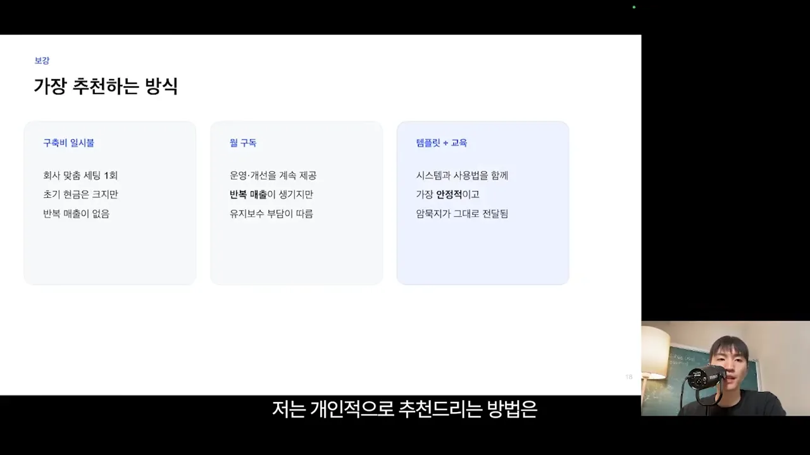
발표자가 '템플릿 + 교육'을 권하는 이유는 두 가지예요. 시스템과 사용법을 함께 알려 주니 가장 안정적이고, 대표가 가진 암묵지가 그대로 전달된다는 거예요. 사업을 해 온 사람이라면 이 방식으로 먼저 팔아 보라고 강하게 권해요.
내 위치에 맞는 시작점
마지막으로 발표자는 지금 내 처지에 따라 어디서 시작할지를 나눠요. 슬라이드의 세 카드 제목이 곧 시작점이에요.
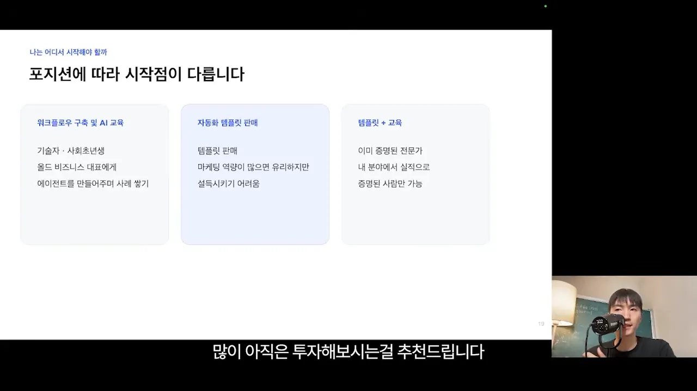
| 지금 나는 | 시작점 | 발표자의 설명 |
|---|---|---|
| 기술자·사회 초년생 | 워크플로 구축과 AI 교육 | 오래된 방식으로 사업하는 대표에게 에이전트를 만들어 주며 사례를 쌓아요 |
| 사업 경험이 있는 사람 | 자동화 템플릿 판매 | 마케팅 역량이 있으면 유리해요. 다만 그 업종 사람들이 아직 AI에 익숙하지 않아 설득이 쉽지 않아요 |
| 이미 검증된 전문가 | 템플릿 + 교육 | 발표자가 가장 권하는 방식이에요. 내 분야에서 실적으로 증명된 사람만 할 수 있어요 |
왜 지금이 기회라고 할까요
발표자는 늘 보여 준다는 그림 한 장으로 마무리해요. 점 하나가 약 320만 명이고, 점 2,500개가 인류 81억 명이에요. 회색은 AI를 안 쓰는 사람, 초록은 무료 챗봇 사용자, 노랑은 월 20달러 유료 AI 사용자예요. 오른쪽 아래 빨간 점 하나가 클로드 코드 사용자예요.
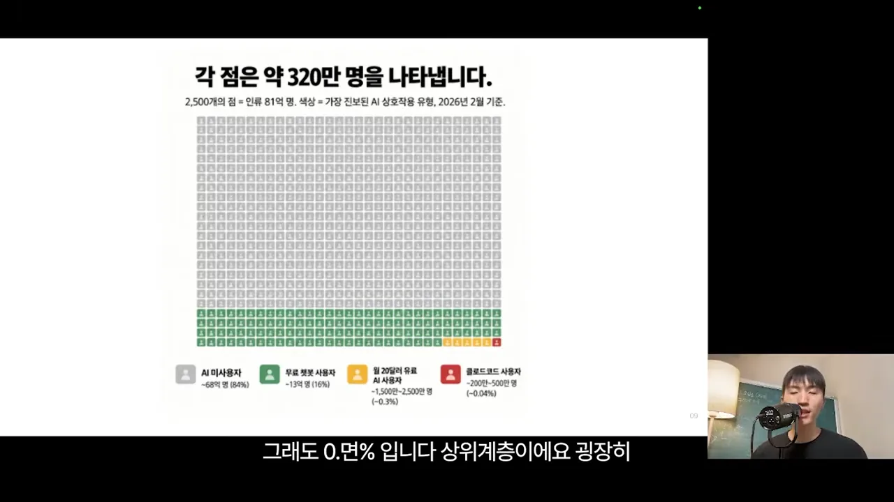
발표자는 2월 기준이라 지금은 훨씬 늘었겠지만, 그래도 아직 극소수라고 말해요. 그래서 이 기술 격차를 이용해 앞서 나가야 한다는 게 결론이에요. 화면의 마지막 문장도 같아요. "당신의 경험을 시스템으로 만드세요."